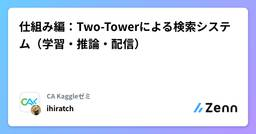

Zennの「機械学習」のフィード
フィード

AIプロジェクトの進め方【G検定 技術解説】
Zennの「機械学習」のフィード
概要AIプロジェクトの進め方は、G検定のシラバスで重要な概念です。この記事では、技術的な詳細について解説します。 定義と背景AIプロジェクトの進め方について、以下の観点から理解することが重要です：理論的背景実装方法実務での応用G検定での出題ポイント 技術的詳細 基本原理AIプロジェクトの進め方の基本となる原理を理解することは、G検定合格に向けて必須です。 実装とアプリケーション実務では以下の点に注意します：パフォーマンス最適化スケーラビリティ保守性監視とロギング 参考資源JDLA公式ガイドライン業界標準のベストプラクティス学...
20時間前
YOLO の追加学習にリグレッションテストを
Zennの「機械学習」のフィード
物体検出のモデルを追加で学習させると、全体の精度は上がったのに、以前は見つけられていた物を見逃すようになることがあります。こうした変化を見つけるために、同じ動画に対する学習前と学習後の検出結果を、フレームごとに比べる仕組みを作りました。ソフトウェア開発でいう「リグレッションテスト」を、物体検出のモデルに当てはめたものです。https://github.com/koshien2015/detection-regression小さくて速い物体を検出するモデルで試すと、次の3つが見つかりました。正解の枠の付け方と判定の閾値だけで生まれる「偽のデグレ」全体の精度が上がった追加学習の中に...
1日前

MiniBoosts: A Boosting Library
Zennの「機械学習」のフィード
ブースティングアルゴリズムを集めたライブラリ MiniBoosts を作りました．実装は Rust で，Python からも使えます．渦巻き状のデータ(訓練 100 点)に対して，AdaBoost，LPBoost，BrownBoost を同じ弱い学習アルゴリズム(RBF，σ = 0.2)で走らせた様子．アルゴリズムで収束が保証されたときに止まります．AdaBoost は 11513 ラウンド，LPBoost は 22 ラウンド，BrownBoost は 607 ラウンドで停止(22 ラウンド目以降は早送り)．下のグラフは損失で，横軸はラウンド数(対数)．デモ（ブラウザで動きます...
1日前
ハイレゾB200計算クラスタを使用してファインチューニングに挑む件 第3回 ファインチューニングについて理解を深めてデータセットを作ろう
Zennの「機械学習」のフィード
本記事は、ハイレゾのB200計算クラスタ（Slurm Workload Manager）を使ってLLMのファインチューニングに挑む全5回連載の第3回です。第1回 ハイレゾ計算クラスタへアクセスしてみよう第2回 Slurm Workload Managerに触れてみよう第3回 ファインチューニングについて理解を深めてデータセットを作ろう（本記事）第4回 やりましょう！ファインチューニング第5回 作ったモデルの評価をしてみよう 前回のおさらいと今回やること前回は、Slurm Workload Manager上で使用する各種コマンドを中心に、どのような制御や情報が参照で...
1日前

小さいLLMの答えを辞書で確かめる方法を「TADORI」と命名した（E15で辞書の鎖を区切る）
Zennの「機械学習」のフィード
この連載では、小さな言葉のAI（Gemma-2 2B）を「口」として使い、その答えを AI の外に置いた部品で確かめられるかを、1つずつ試してきました。将来はこの「確かめる計算」を p-bit のような物理の部品に任せる、AKANE アーキテクチャという構想の部品の研究です。今回はシリーズの区切りです。E15（辞書の鎖の最後の段を Gemma に判定させる）の結果と、E2〜E15 で最後まで残った確かめ方 TADORI（たどり） のまとめを書きます。TADORI は Tracing Along Definitions, Opting for the Right Interpretat...
1日前

正しい解が学べる解とは限らない──FPRTが学生の間違い方の診断で推論蒸留のデータを作り直す仕組み
Zennの「機械学習」のフィード
正しい解が学べる解とは限らない──FPRTが学生の間違い方の診断で推論蒸留のデータを作り直す仕組み TL;DR強い教師モデルの推論軌跡で小さい学生モデルをSFTする──数学推論の能力転送としてはほぼ標準となったこの手法には、古くて新しい問題がつきまとう。学生は教師の出力分布に過剰適合し、推論時に自分の振る舞いが訓練分布から外れた瞬間、回復する術を持たない。数学推論では各ステップがすべての先行ステップに依存するため、一つのつまずきが以降の鎖全体を無効にする。誤りを訓練に組み込む最近の手法（LEMMAなど）も、修正軌跡そのものは依然として教師の推論スタイルを反映していて、学生には再...
2日前

小さいLLMの点検で、効いたのは意味選びと手がかりを全部まとめる学習だった（E11〜E14）
Zennの「機械学習」のフィード
この連載では、小さな言葉のAI（Gemma-2 2B）を「口」として使い、その答えを AI の外に置いた部品で確かめられるかを、1つずつ試しています。将来はこの「確かめる計算」を p-bit のような物理の部品に任せる、AKANE アーキテクチャという構想の部品の研究です。 これまでの流れE2-10・E2-11：先行研究 BTProp と同じテストで、ルールも疑う確率伝搬（BP）を比べた。わざと壊したつながりには強いが、元のつながりでは BTProp が上か同着。https://zenn.dev/mst_design2020/articles/8b904689df2ddcE...
2日前

仕組み編：Two-Towerによる検索システム（学習・推論・配信） 2
2
Zennの「機械学習」のフィード
はじめにihiratchです。本記事では、検索・推薦タスクで使われる Two-Tower モデルについて解説します。Two-Tower は、クエリとアイテムをそれぞれ別のニューラルネットワークでベクトルに変換し、その類似度から関連度を評価するモデルです。アイテム側のベクトルを事前に計算しておけるため、大量の候補から効率よく検索することができます。本記事は「仕組み編」として、検索タスクから始まり、Two-Tower の構造・推論・学習・配信までを説明します。学習については、特に負例のサンプリングについて深掘りします。実際のデータセットを使った実装・学習・評価は、別の「実験編」で扱...
2日前

【小学5年生でもわかる】AIプロジェクト管理ってなに？
Zennの「機械学習」のフィード
AIプロジェクトの進め方 とはAIプロジェクトをビジネスの視点で進める方法について学びます。AIプロジェクトの進め方 は、技術的な開発だけでなく、ビジネス目標の達成を視点とした管理です。 成功するAIプロジェクトの特徴明確なビジネス目標 ：何を成し遂げるのか適切なスコープ ：現実的な規模と期間ステークホルダー管理 ：関係者との合意形成リスク対策 ：失敗時の対応策 日常例医療機関がAIで患者診断を自動化したいとします。失敗するプロジェクト ：技術者だけで進めて、医者の意見を聞かない。結果、医者が使いづらいシステムになる。成功するプロジェクト ：医者...
2日前

森林回避におけるFlyWire特徴・PPO・LSTMの比較
Zennの「機械学習」のフィード
要旨固定FlyWire結線を用いた特徴、PPOによる読出し学習、LSTMによる記憶、全周距離観測を段階的に比較した。未学習配置では画像特徴LSTMが65/90到達し、FlyWire特徴LSTMは1/90であった。距離観測系はさらに到達数を増やしたが、観測・容量・学習量等を同時に変更しており、単一要因の効果ではない。!本稿は保存済み実験報告・集計から再構成したシミュレーション研究報告であり、査読論文ではない。実機での検証は行っていない。ここに記す数値は保存記録に基づき、記事化のために新たに実験を再実行した結果ではない。 1. 目的神経結線に由来する特徴と記憶の追加が森林回...
2日前

閉ループ羽根・CFD・イオン風モデルの動作確認と未検証事項
Zennの「機械学習」のフィード
要旨閉ループ形状の羽根の可視化、SU2公式例、推力を仮定した1次元イオン風モデルの動作確認を整理した。外観変更の接続確認、数値計算の停止条件、質点モデルの整合性を確認した範囲に限り、空力性能や実機浮上を実証したものではない。!本稿は保存済み実験報告・集計から再構成したシミュレーション研究報告であり、査読論文ではない。実機での検証は行っていない。ここに記す数値は保存記録に基づき、記事化のために新たに実験を再実行した結果ではない。 1. 目的異なる忠実度の模型で得た結果を同じ性能実証として扱わないため、それぞれ何を計算し、何を省略したかを記録する。 2. 閉ループ形状の...
2日前

樹冠上からの熱源観測：高度・画角・解像度による検出限界
Zennの「機械学習」のフィード
要旨不透明な樹冠モデルを使い、高度、画角、解像度、遮蔽、温度差の条件を比較した。遮蔽なし・画角50度・温度差6Kでは、60mで320相当は0/9、640相当は9/9の検出となった。完全遮蔽では検出できず、温かい岩の偽陽性も残った。実カメラや実森林を校正した結果ではない。!本稿は保存済み実験報告・集計から再構成したシミュレーション研究報告であり、査読論文ではない。実機での検証は行っていない。ここに記す数値は保存記録に基づき、記事化のために新たに実験を再実行した結果ではない。 1. 目的対象が存在しても、遮蔽と対象の画素数によって観測は成立しない。高度・画角・解像度を変え、...
2日前

【scikit-learn入門 #7】回帰モデルの評価 ─ MAE・MSE・RMSE・決定係数R²
Zennの「機械学習」のフィード
はじめに本記事は「Pythonで機械学習を行うscikit-learn入門」シリーズの第7回です．第6回では 分類 モデルの評価指標を学びました．第7回では，回帰（数値予測） モデルの評価指標を扱います．第3回で線形回帰モデルを作りましたが，「で，それってどれくらい正確なの？」という肝心の問いには答えていませんでした．本記事でその答えを出します．私のscikit-learnライブラリのバージョンは "1.5.2" です． 本シリーズの構成シリーズ構成予定（全11記事）インストール 〜 機械学習の全体像（fit / predict）データの準備 ─ train_...
2日前
9行のDSLでQwenをお嬢様言葉に: 勾配なし、重みは変えず、規則が働くまで元と一字も違わない
Zennの「機械学習」のフィード
この記事は個人（と会社）の実験の記録です。モデルはQwen3.5-9B（Apache-2.0）、試験の問はELYZA-tasks-100（ELYZA、CC BY-SA 4.0）、学習の問はdatabricks-dolly-15k-ja（kunishou、CC BY-SA 3.0。元はDatabricksのdatabricks-dolly-15k）を使いました。実装と実行はClaude Code（AnthropicのClaude）と一緒に行いました。 何をしたか以前翻訳モデルPLaMo 3 Translateにお嬢様言葉を書き込みました（Xの投稿）。今回は対話モデルのQwen3.5-...
2日前

競馬AI開発の罠。LightGBM実装で絶対に避けるべき「データリーク」と正しい特徴量設計
Zennの「機械学習」のフィード
はじめに「よし、LightGBMのバックテストで回収率150%を超えるモデルができた！」そう意気込んで週末のメインレースで馬券を買ってみたら、結果は全く当たらず回収率は30%……。競馬予測AIの開発に挑戦したことがあるエンジニアなら、一度はこんな経験があるのではないでしょうか？競馬予測を題材にした機械学習は、データセットが豊富（netkeiba等）で目的変数も明確なため、データサイエンスの題材として非常に面白い分野です。しかし、実は「手元のテストデータでは勝てるのに、実運用では全く機能しない」というサイレントエラーが極めて起きやすいドメインでもあります。その原因の9割は、モ...
2日前

新人DevOpsエンジニアがAI/MLでスパムフィルタリングを自動化した話
Zennの「機械学習」のフィード
こんにちは、InflabのDevOpsエンジニアのPokaです。私にとって初めての会社であるInflabに入社して、早くも3か月が過ぎようとしています。今回は、AI/MLの専門職がいない私たちのようなスタートアップが、機械学習/AIを活用した自動スパムフィルタリングシステムを導入し、改善してきた過程を紹介します。 Inflearnのスパムフィルタリングの始まり スパム問題の浮上スパム投稿に苦しめられる運営チーム…Inflearnの成長とともに、さまざまなスパム性のあるコンテンツが投稿されるようになりました。当初は運営チームが手作業でこうした投稿を一つひとつ確認し、スパ...
3日前

少しだけ確かめた答えをルールの網で広げても、強い学習には勝てなかった――小さいLLMの答えを外から確かめる（E9）
Zennの「機械学習」のフィード
前回（E6〜E8）は、小さなAI（Gemma-2 2B）の「X は C の一種か」という答えを、Wiktionary の説明文で外から確かめました。https://zenn.dev/mst_design2020/articles/5d3feab2c2fff8一番効いたのは、Gemma に「この説明文の中で、この語はどの語義か」だけを選ばせて、辞書の説明文をたどるやり方でした。E2 から使ってきた 網（ルールで主張をつなぎ、loopy BP で確率を出すもの） は、ここまで一度も単純なやり方に勝てていませんでした。今回は、網が役に立ちそうな場面を作って確かめました（E9）。あわせて、...
3日前

臨床試験をひもとく：AI研究者のためのガイド（第4回）臨床試験で使われるAIモデル
Zennの「機械学習」のフィード
はじめにAIは臨床試験のライフサイクル全体で活用が進んでいます。シリーズ最終回では、代表的なAI技術とその用途、課題を整理し、KEIJI AIの取り組みを紹介します。 自然言語処理（NLP）プロトコル、治験薬概要書、診療記録、適格基準など、臨床試験の情報の多くはテキストです。用途： 電子カルテや診療記録から、適格基準に合う患者さんを手作業よりはるかに速く見つける適格性スクリーニング。課題： 臨床テキストは略語や専門用語が多く、医療データで学習したモデルが必要です。 生成AI合成データ生成： 実データと統計的に似ていて、個人を特定できない合成患者データを...
3日前

AIガバナンス【G検定 技術解説】
Zennの「機械学習」のフィード
概要AIガバナンスは、G検定のシラバスで重要な概念です。この記事では、技術的な詳細について解説します。 定義と背景AIガバナンスについて、以下の観点から理解することが重要です：理論的背景実装方法実務での応用G検定での出題ポイント 技術的詳細 基本原理AIガバナンスの基本となる原理を理解することは、G検定合格に向けて必須です。 実装とアプリケーション実務では以下の点に注意します：パフォーマンス最適化スケーラビリティ保守性監視とロギング 参考資源JDLA公式ガイドライン業界標準のベストプラクティス学術論文および白書
3日前

AIの不確実性を確率で扱う 〜AIの出力を安全にシステムへつなぐ意思決定層の設計〜
Zennの「機械学習」のフィード
AIは「80%の確率でA」のような確率を返します。一方、業務システムが受け取れるのは「止める／通す」「100個発注する」といった確定した指示だけです。本書は、この2つの間に「意思決定層」を置き、確率・統計を使ってAIの出力を安全に確定した指示へ変える設計を解説します。■ こんな方へ・AIの出力を業務システムやアプリにつなぐ設計をしているエンジニア・しきい値を「とりあえず0.5」で決めていて、根拠に不安がある方・LLMやエージェントを本番に入れたいが、止め方や監視のしかたに悩んでいる方■ なぜ意思決定層を置くのかAIの精度がどれだけ上がっても、出力は確率のままです。そして、どこまでリスクを取るかの答えは、過去のデータの中にはありません。だから、確率を確定した指示に変える境界を、AIの外で設計します。■ この本で扱うこと・推論層・意思決定層・実行層の3階建ての設計と、ビジネスルールをAIに持たせない疎結合・損失表からしきい値を決め、迷う出力は人に回す・AIの確率を信じてよいか確かめる（較正）・分位点や誤差ログから、発注量などの確定値を決める・入力の異常とデータの変化（ドリフト）を検知する・エージェントのステップ数とコストに上限をかける・設定の外出し、決定ログ、フォールバックで運用に載せる■ ご感想・ご質問・誤りのご指摘X：https://x.com/yuki_h_94フォーム：https://forms.gle/y5ss6LUMTCSXh6AcA
3日前